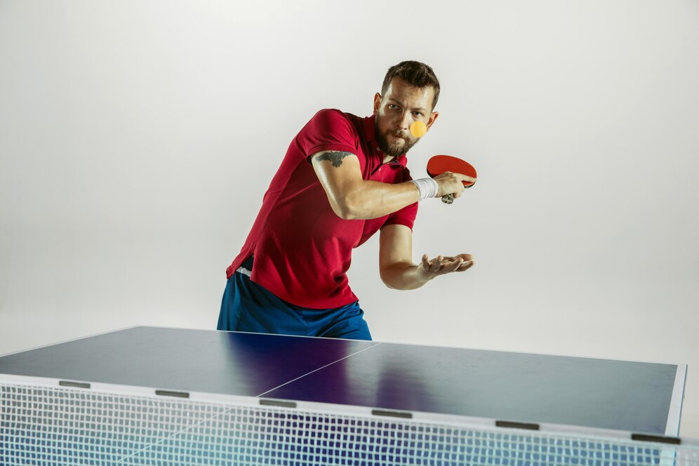
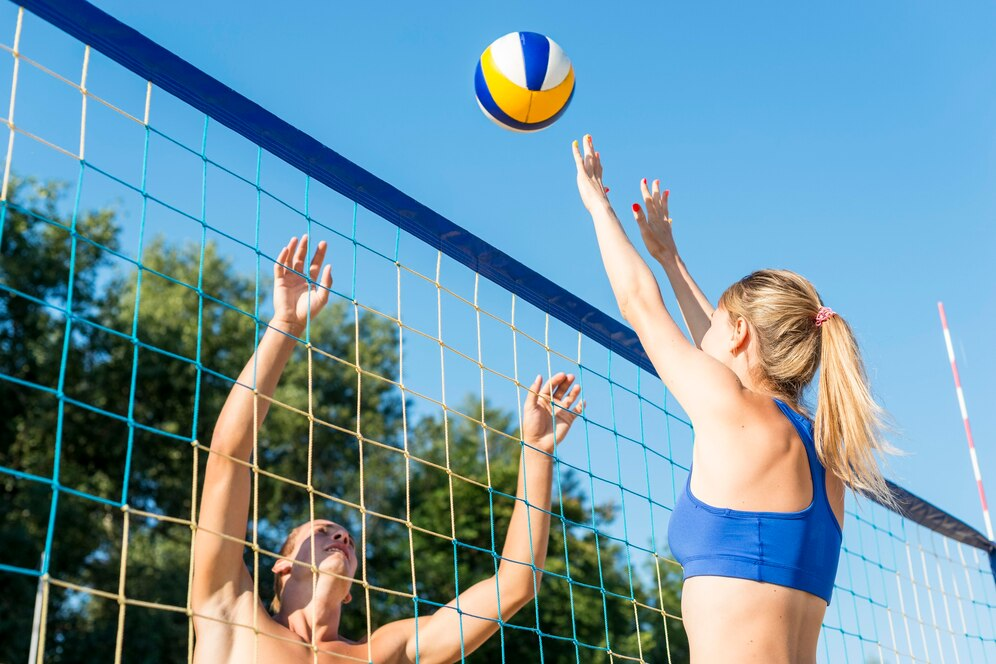

Tão antigos quanto o homem, os esportes são uma das invenções mais benéficas do homem. Além de manter o corpe saudável, ainda auxiliam na criação de uma série de comportamentos positivos, como a humildade, a união, a empatia, dentre outros.
E os esportes com bola são, sem nenhuma dúvida, os mais populares. Mas você sabe a diferença entre alguns deles? É justamente isso que iremos descobrir abaixo.
| Esporte | Origem | Ambiente | Objetivo | Equipe | ||
|---|---|---|---|---|---|---|
| 1 |
|
Futebol | Inglaterra, no século XVII | Campo: 90 por 120m e 45 por 90 m. | Marcar o máximo possível de gols. | No máximo 11 jogadores e no mínimo 7. |
| 2 |
|
Basquete | EUA,1981 | Quadra: dimensões de 28m de c/ p/ 15m de largura. | Colocar a bola no cesto da equipe adversária, marcando pontos. | 5 jogadores cada (em jogo), mais 7 reservas. |
| 3 |  | Pinque-Pongue | Inglaterra, século 19 | Mesa de 14 m por 5m circundada por aparadores de até 1,5 m por 0,75 m. | Marcar o máximo possível de pontos. | Dois ou quatro jogadores. |
| 4 |  | Vôlei | EUA, 1895 | Quadra de 18 m x 9 m | Marcar o máximo possível de pontos. | 6 jogadores em quadra e 6 jogadores reserva. |
Saiba mais acesse o link